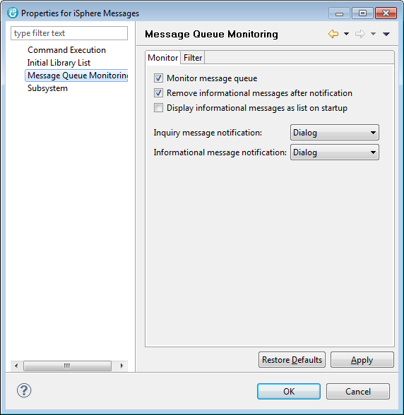

The iSphere Message Subsystem integrates into the Remote Systems Explorer as shown below. From there you can use the context menu to create message filters or to perform actions on selected messages.
Use the iSphere Messages context menu to create filters for your messages.

Use the message file context menu to rename a message filter or to change the filter properties.

Use the message file context menu to remove or view the message details.

Answer inquery messages from the message detail dialog:

Another feature of the iSphere message subsystem is the ability to monitor the message queue of your your user profile in the background. When a new message is added to the message queue you can be notified by:
Use the context menu of the iSphere Messages node to configure the message monitor.

The message monitor requires an exclusive lock on your message queue, which it can not get, when the messsage queue is locked by another job, such as a 5250 session. Therefore it is recommended to start RDi/WDSCi before any 5250 session.
The message queue is not immediately unlocked, when option Monitor message queue is unchecked. It can take up to 20 seconds until the lock has been removed.